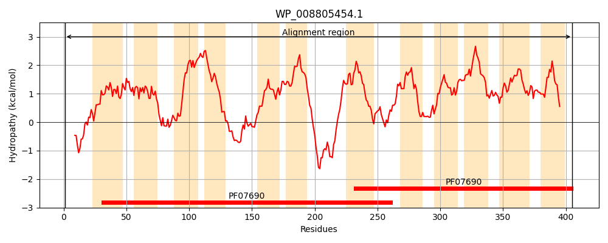
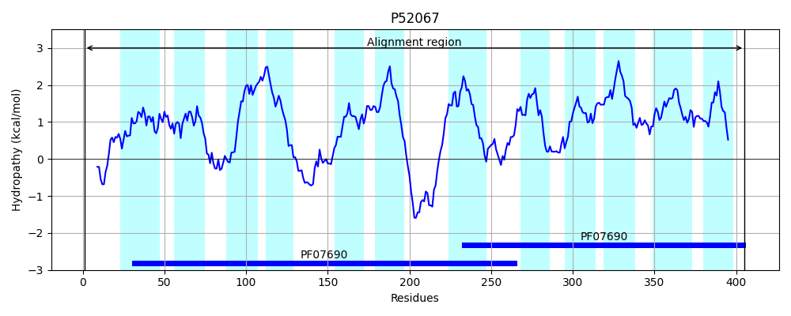
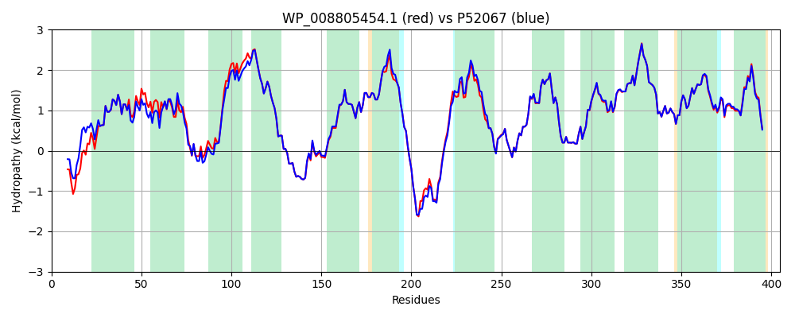

Hit Accession: P52067
Hit TCID: 2.A.1.35.1
Hit Description: gnl|BL_ORD_ID|10835 gnl|TC-DB|P52067|2.A.1.35.1 Fosmidomycin resistance protein - Escherichia coli.
Mach Len: 405
e:0.000000
Query TMS Count : 12
Hit TMS Count: 12
TMS-Overlap Score: 12.100000
Predicted Substrates:CHEBI:443725;fosmidomycin
BLAST Alignment:
Score: 1864 , Bit scores: 722 bits, E-value: 0.0e+00, Alignment length: 405, Percentage identity: 90
Query: 1 MAINQTAQPLSGPAAPPQKARTSFGILGAISLSHLLNDMIQSLILAIYPLLQAEFSLTFVQIGMITLTFQLTSSLFQPVIGYITDKRSMPWSLPVGMCFTLCGLILLALAGSFGMVLLAAALVGTGSSVFHPESSRVARMASGGRHGLAQSLFQVGGNFGSSLGPLLAAVIIAPYGKGNVAWFVLAALLAIVVLSQISRWYAAQHRMNKGKPKPLIVNPLPRNKVILAVGILLMLIFSKYFYMASISSYYTFYLMHKFGLSVQNAQLHLFAFLFAVAAGTVIGGPVGDKIGRKYVIWGSILGVAPFTLVLPYASLEWTGILTVIIGFILASAFSAILVYAQELLPGRIGMVSGLFFGFAFGMGGLGAAVLGLLADHTSIDLVYKICAFLPLLGFLTIFLPDNRQK 405
MA+++ QP++G AA KARTSFGILGAISLSHLLNDMIQSLILAIYPLLQ+EFSLTF+QIGMITLTFQL SSL QPV+GY TDK MPWSLP+GMCFTL GL+LLALAGSFG VLLAAALVGTGSSVFHPESSRVARMASGGRHGLAQS+FQVGGNFGSSLGPLLAAVIIAPYGKGNVAWFVLAALLAIVVL+QISRWY+AQHRMNKGKPK I+NPLPRNKV+LAV ILL+LIFSKYFYMASISSYYTFYLM KFGLS+QNAQLHLFAFLFAVAAGTVIGGPVGDKIGRKYVIWGSILGVAPFTL+LPYASL WTG+LTVIIGFILASAFSAILVYAQELLPGRIGMVSGLFFGFAFGMGGLGAAVLGL+ADHTSI+LVYKICAFLPLLG LTIFLPDNR K
Sbjct: 1 MAMSEQPQPVAGAAASTTKARTSFGILGAISLSHLLNDMIQSLILAIYPLLQSEFSLTFMQIGMITLTFQLASSLLQPVVGYWTDKYPMPWSLPIGMCFTLSGLVLLALAGSFGAVLLAAALVGTGSSVFHPESSRVARMASGGRHGLAQSIFQVGGNFGSSLGPLLAAVIIAPYGKGNVAWFVLAALLAIVVLAQISRWYSAQHRMNKGKPKATIINPLPRNKVVLAVSILLILIFSKYFYMASISSYYTFYLMQKFGLSIQNAQLHLFAFLFAVAAGTVIGGPVGDKIGRKYVIWGSILGVAPFTLILPYASLHWTGVLTVIIGFILASAFSAILVYAQELLPGRIGMVSGLFFGFAFGMGGLGAAVLGLIADHTSIELVYKICAFLPLLGMLTIFLPDNRHK 405 | Protein Hydropathy Plots: |
|---|
|  |  |
Pairwise Alignment-Hydropathy Plot:
|
|---|
|  |